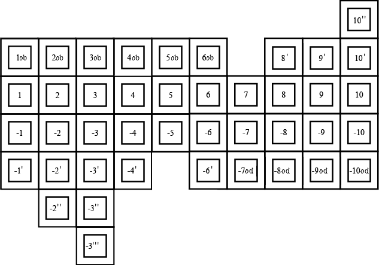
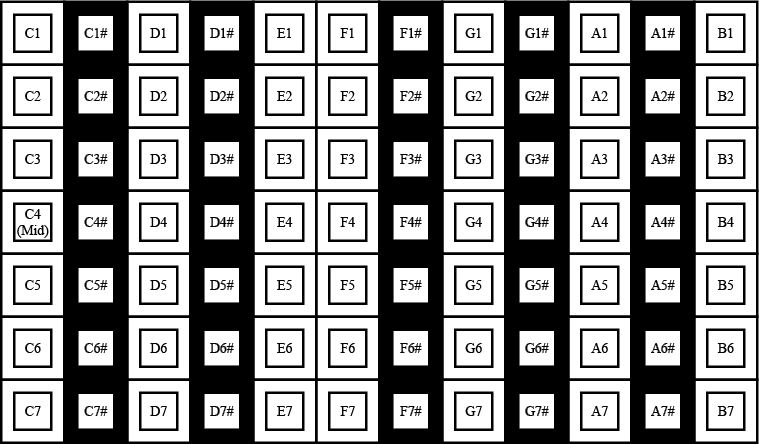

>
Instrument Bank #1
Load Instrument
Instrument Bank #2
Load Instrument
Instrument Bank #3
Load Instrument
Instrument Bank #4
Load Instrument
Choose a Scale / Chord to Display
Blues
Minor Pentatonic
Major Pentatonic "Country"
Major
Natural Minor
Harmonic Minor
Melodic Minor Ascending
Lydian
Mixolydian
'Mixed Up' Lydian-Super Blues
Dorian
Aeolian
Phrygian
Locrian
Gypsy Minor
Gypsy Major
Harmonic Major-Major Flat 6
Bebop
Bebop Minor
Bebop Subdominant
Hindu
Spanish
Whole Tone
Chromatic
Major Chord
Minor Chord
7th Chord
Maj7 Chord
m7 Chord
Sus2 Chord
Sus4 Chord
Add9 Chord
Diminished Chord
Dim7 Chord
Aug Chord
Maj6 Chord
Maj6add9 Chord
m6 Chord
m6add9 Chord
9th Chord
m6add9 Chord
m9 Chord
Maj9 Chord
Power Chord
G
Ab / G#
A
Bb / A#
B
C
Db / C#
D
Eb / D#
E
F
Gb / F#
Display Scale
Clear Scale
Hide Scale Degrees
Show Note Names
Help

